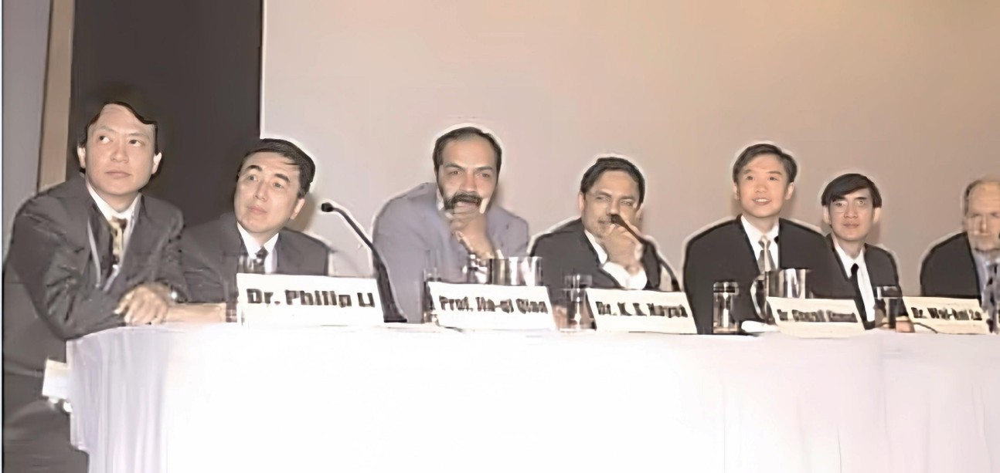
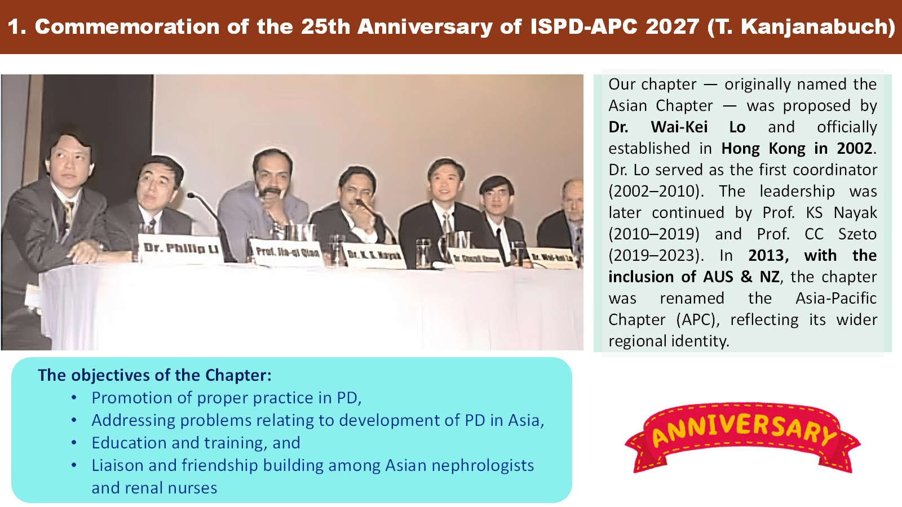
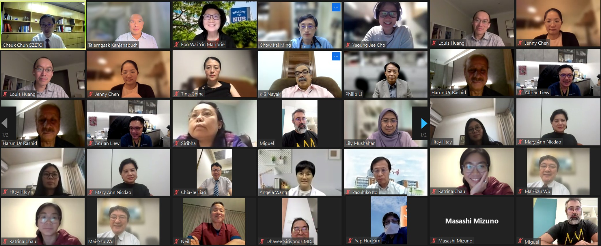
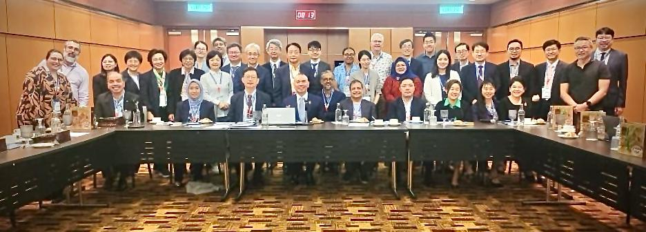

Governance Structure
The ISPD Asia Pacific Chapter operates under the umbrella of the International Society for Peritoneal Dialysis (ISPD), working closely with the ISPD CEO and Executive Committee. Our governance framework ensures alignment with global ISPD standards while addressing regional priorities.
- Regional Chair: Leads the Asia Pacific Chapter and represents the region at ISPD global meetings.
- Executive Council: Comprised of elected representatives from member countries across the Asia Pacific.
- Committees: Dedicated teams focusing on education, research, clinical practice, and membership.
- Country Representatives: National coordinators who facilitate local activities and communication.
Mission & Goal
Our mission is to improve the quality of life for patients with end-stage kidney disease across the Asia Pacific region by advancing peritoneal dialysis as a safe, effective, and accessible treatment modality.
Core Goals
- Promote excellence in clinical PD practice through education and guideline dissemination.
- Foster regional research collaboration to generate Asia Pacific-specific evidence.
- Advocate for equitable patient access to PD therapy across diverse healthcare systems.
- Build a strong network of PD professionals for knowledge exchange and mentorship.
- Support young nephrologists and researchers through training and grant opportunities.
PD uptake across the Asia Pacific
Across the ten world regions used by the International Society of Nephrology, the highest median uptake of peritoneal dialysis anywhere is North and East Asia, at 126.0 patients per million population. The second lowest is South Asia, at 1.9 pmp. Both lie within the Asia Pacific — a sixty-six-fold difference inside one region, set against a global median of 21.0 pmp across 137 countries. Narrowing that gap is the work this chapter exists to do.
Prevalence of chronic peritoneal dialysis, by ISN region
Median rate per million population, adults aged 18 and over. The shading bands are the quartiles of the global country-level distribution, whose median is 21.0 pmp. Each region carries one median, so the wide differences between countries inside a region are not visible here — the table gives the spread.
![World map with the ten ISN regions shaded by their median prevalence of chronic peritoneal dialysis. North and East Asia and Oceania and South East Asia carry the darkest shade, 62.4 pmp and above. Latin America, Western Europe and Eastern and Central Europe are one step lighter. The Middle East, North America and the Caribbean, NIS and Russia, and South Asia are lighter again. Africa is lightest, under 1.5 pmp. The three Asia-Pacific regions are outlined in gold. Every value is in the table below.](images/pd-prevalence-map.svg)
- under 1.5 pmp
- 1.5–20.9
- 21.0–62.3
- 62.4 and above
- not surveyed
- Asia-Pacific regions
Chart by the ISPD Asia-Pacific Chapter. Data from Table 1 of Cho Y, Cullis B, Ethier I, et al. Global structures, practices, and tools for provision of chronic peritoneal dialysis. Nephrol Dial Transplant 2024;39(Suppl 2):ii18–ii25. doi:10.1093/ndt/gfae130. Base map drawn from Natural Earth (public domain). Regional groupings follow the ISN classification, which does not map exactly onto ISPD chapter boundaries.
View the data table
| ISN region | Median (pmp) | IQR | Countries |
|---|---|---|---|
| North and East Asia | 126.0 | 80.9–216.0 | 5 |
| Oceania and South East Asia | 95.0 | 10.1–181.6 | 10 |
| Latin America | 59.5 | 21.0–130.0 | 20 |
| Western Europe | 56.3 | 40.4–68.2 | 19 |
| Eastern and Central Europe | 32.4 | 21.4–52.8 | 17 |
| Middle East | 17.5 | 10.9–35.0 | 10 |
| North America and the Caribbean | 11.5 | 0.0–114.2 | 11 |
| NIS and Russia | 10.8 | 0.0–17.3 | 7 |
| South Asia | 1.9 | 0.6–5.8 | 6 |
| Africa | 0.2 | 0.0–2.1 | 32 |
| All regions | 21.0 | 1.5–62.4 | 137 |
Strategic Direction
Over the coming years, the ISPD Asia Pacific Chapter will focus on the following strategic priorities:
- Education Expansion: Scale up online and in-person educational programs to reach clinicians in underserved areas.
- Research Networks: Establish multi-center collaborative studies addressing regional challenges in PD care.
- Policy Advocacy: Engage with health ministries and payers to improve PD reimbursement and infrastructure.
- Digital Health: Leverage telemedicine and mobile health tools to support remote PD patient monitoring.
- Patient Empowerment: Develop patient education materials in local languages to improve self-management.
Our History
The ISPD Asia Pacific Chapter has a rich history spanning more than two decades of dedication to advancing peritoneal dialysis care across the region.
From Asian Chapter to Asia-Pacific Chapter
Our chapter — originally named the Asian Chapter — was proposed by Dr. Wai-Kei Lo and officially established in Hong Kong in 2002. Dr. Lo served as the first coordinator from 2002 to 2010, laying the foundational vision for regional collaboration in PD care.
The leadership was later continued by Prof. K.S. Nayak (2010–2019) and Prof. C.C. Szeto (2019–2023), each bringing new energy and expanding the chapter's reach across Asia.
In 2013, with the inclusion of Australia and New Zealand, the chapter was renamed the Asia-Pacific Chapter (APC), reflecting its wider regional identity and commitment to serving nephrology professionals across the entire Asia-Pacific rim.
Original Objectives
Since its inception, the chapter has been guided by four core objectives:
- Promotion of proper practice in peritoneal dialysis
- Addressing problems relating to development of PD in Asia
- Education and training for nephrology professionals and renal nurses
- Liaison and friendship building among Asian nephrologists and renal nurses
Commemorating 25 Years — Looking Ahead to 2027
As we approach the 25th Anniversary of ISPD-APC in 2027, we celebrate the legacy built by our founding members and successive leaders. The chapter continues to evolve — from physical congresses to virtual case discussions, from local workshops to multi-center research collaborations — always staying true to its mission of improving PD care for patients across the Asia Pacific.



